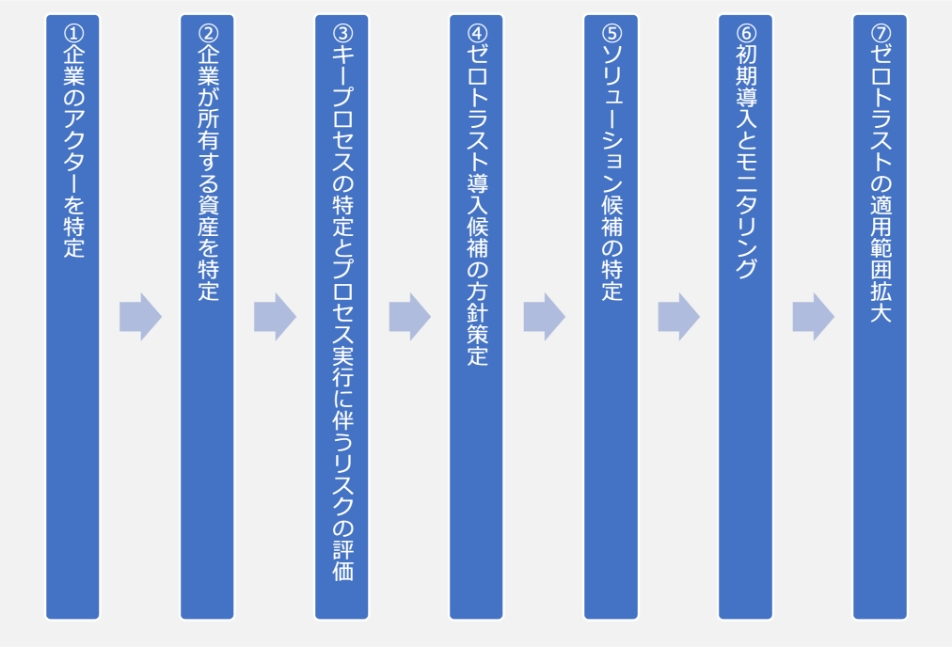

17-2-2. ゼロトラスト・境界防御モデル
関連する主な管理策
5.9、5.15~5.23、5.29~5.30、8.1~8.3、8.15~8.16、8.21、8.32
ゼロトラストの定義
ゼロトラスト（ZT）は、ネットワークが侵害されている場合であっても、情報システムやサービスにおいて、各リクエストを正確かつ最小の権限となるようにアクセス判断する際の不確実性を最小化するために設計された概念とアイデアの集合体のことです。
境界防御モデルとゼロトラストの違い
境界防御モデルは、信用する領域（社内）と信用しない領域（社外）に境界を設け、組織が守るべき情報資産は信用する境界内部に存在するという前提をもとに、境界線でセキュリティ対策を講じることで、境界外部からの脅威を防ぐという考え方です。
一方、ゼロトラストは、「境界」の概念をなくし、守るべき情報資産にアクセスするものはすべて確認し、認証・認可を行うことで脅威を防ぐという考え方です。
図59. 境界防御モデルとゼロトラストの概要図
現在、クラウドサービスの普及やモバイル端末の活用、テレワークによる働き方の多様化により、内部と外部を隔てる「境界」そのものが曖昧になりつつあります。その結果、従来の社内・社外の境界でセキュリティ対策を行う「境界防御モデル」では、サイバー攻撃やマルウェア感染などの脅威から情報資産を守ることが難しくなってきています。こうした問題を解決するものとして、「ゼロトラスト」という考え方が注目されています。
ゼロトラストと境界防御の関係
ゼロトラストは、境界防御モデルで守ることが困難な脅威に対して適用する対策ではあるものの、「境界防御モデルを排除する考え」ではありません。強固なセキュリティを構築するにあたり、すでに用いられている境界防御モデルを活かすことが大切です。
ゼロトラスト導入に向けた進め方
準備工程
ゼロトラストを導入する準備として、資産 (デバイスやネットワークなど) 、主体 (ユーザ・権限など) 、ビジネスプロセスについて詳細に理解する必要があります。ゼロトラストを導入する準備として、資産、主体、データフロー、ワークフローの調査を行います。
ゼロトラスト導入プロセス
準備工程を実施した以降は、次のプロセスで進めます。
図60. ゼロトラスト導入プロセス
（出典）IPA「ゼロトラスト導入指南書 〜情報系・制御系システムへのゼロトラスト導入〜 」を基に作成
ゼロトラスト導入の各プロセスで実施すべき内容を説明します。
① 企業のアクターを特定
企業の主体には、ユーザに紐づいたアカウントと、サービスに紐づいたアカウントの両方が含まれることがあります。どのユーザにどのレベルの権限を与えるのかは精査が必要です。基本的には、必要な対象に必要な権限だけ与えるという最小権限の考え方で整理します。
② 企業が所有する資産を特定
ゼロトラスト・アーキテクチャ（ゼロトラストの概念を利用し、コンポーネントの関係、ワークフロー計画、アクセスポリシーなどを含むサイバーセキュリティ計画のこと ）は、デバイスを識別して管理する機能が必要であり、企業内のデバイスはもちろん、企業所有ではないデバイスについても識別し、監視する機能が必要です。よって、企業の情報にアクセスするデバイスについては、「シャドーIT」も含めて可能な限り資産化する必要があります。なお、企業によって可視化されているもの (例：MACアドレス、IPアドレス) と、管理者のデータ入力による追加分も含まれます。
③ キープロセスの特定とプロセス実行に伴うリスクの評価
業務プロセス、データフロー、および組織のミッションにおけるそれらの関係（プロセス）を特定します。次に信用度レベルをつけ、ゼロトラストへ移行するプロセスを決めます。認証・認可の判断を導入することによる失敗のリスクを考慮し、初めはビジネスインパクトの低いビジネスプロセスから開始するとよいでしょう。ある程度、認証・認可の挙動を掴んでから対象を広げていくことで、リスクを抑えることができます。
④ ゼロトラスト導入候補の方針策定
資産またはワークフローを特定したら、影響を受ける対象をすべて特定します。（上流リソース (例:ID管理システム) 、下流リソース (例:セキュリティ監視) 、エンティティ (例:主体ユーザ))。次に企業管理者は、候補となるビジネスプロセスで使用されるリソースの信用度レベルの重みを決定します。それらを踏まえて、何を対象に、どこへゼロトラストの機能を導入するのかを決定します。
⑤ ソリューション候補を特定
④で策定した内容をもとに、導入箇所に適するソリューション、製品を検討します。製品、ソリューションについては後述します。
⑥ 初期導入とモニタリング
初期導入時には、適用したポリシーや初期動作の確認を含め、監視モードで運用することが推奨されます。初期導入後はしばらくシステムの動作を監視し、必要に応じて、システムの安全性を保ちつつ、業務効率を最大化するために調整を行います。
⑦ ゼロトラストの適用箇所拡大
運用フェーズに入ったら、ネットワークや資産の監視は継続し、トラフィックの記録を行います。これらを実施していくなかで、ポリシーの変更や適用箇所の拡大を適宜実施していきます。ポリシー変更などを実施する場合は、深刻な問題にならないように行います。
ゼロトラスト導入に向けた実施手順（例）
「ゼロトラスト導入に向けた進め方」で説明したプロセスをもとに、ゼロトラストを導入するための実施手順を、例を用いて説明します。また、実施手順を策定する上で、選択すべき管理策の例を紹介します。
実施手順（例）
選択すべき管理策（例）
準備工程
新たに導入する必要のあるプロセスやシステムを判断することおよびアクセスの認証・認可を正しく行うため、現在の運用状況を把握する。
- a.
情報システム管理者は、次の事項を調査し、詳細に理解する。
- 資産 (デバイスやネットワークなど)
- 主体 (ユーザ・権限など)
- b.
経営者は、次の事項を調査し、詳細に理解する。
- ビジネスプロセス
- 5.9 情報及びその他の関連資産の目録
- 5.16 識別情報の管理
- 5.18 アクセス権
- 8.2 特権的アクセス権
① 企業のアクターを特定
- a.情報システム管理者は、業務に必要な者のみ情報へアクセスできる権限を与える。
- b.アクセス権限および操作権限は、認められた場合以外は与えないようにする。
- 5.15 アクセス制御
- 5.16 識別情報の管理
- 5.17 認証情報
- 5.18 アクセス権
- 8.2 特権的アクセス権
- 8.3 情報へのアクセス制限
② 企業が所有する資産を特定
デバイスを識別して管理する。
- a.企業の情報にアクセスするデバイスは、シャドーITを含めて、すべて識別して管理する。
- b.シャドーITは可能な限り資産化する。
- 5.9 情報及びその他の関連資産の目録
- 8.1 利用者終端装置
③ キープロセスの特定とプロセス実行に伴うリスクの評価
- a.業務プロセス、データフロー、組織のミッションにおける業務プロセスとデータフローの関係（プロセス）を特定する。
- b.
特定したプロセスのうち、ゼロトラストに移行するプロセスを決定する。
認証・認可の判断を導入することによる失敗のリスクを考慮し、初めは組織の事業に与える影響が低いビジネスプロセスを選択し、徐々に対象を広げる。
- 5.29 事業の中断・阻害時の情報セキュリティ
- 5.30 事業継続のためのICTの備え
④ ゼロトラスト導入候補の方針策定
- a.
資産、プロセスの特定後、ゼロトラストの導入により影響を受ける対象をすべて特定する。
- 上流リソース（例:ID管理システム）
- 下流リソース（例:セキュリティ監視）
- エンティティ（例:主体ユーザ）
- b.ゼロトラスト導入候補となるビジネスプロセスで使用されるリソースの重要さを決定する。
- c.リソースの重要さを踏まえて、何を対象に、どこへゼロトラストの機能を導入するのかを決定する。
5.9 情報及びその他の関連資産の目録
⑤ ソリューション候補を特定
④で策定した内容をもとに、導入箇所に適するソリューションを検討する。
⑥ 初期導入とモニタリング
- a.ソリューションの初期導入時は、実際に通信の遮断は行わず、適用したポリシーや初期動作の確認を行う。
- b.動作に問題がないことを確認後、運用を開始する。
8.16 監視活動
⑦ ゼロトラストの適用箇所拡大
- a.運用開始後は、ネットワークや資産の監視は継続しつつ、トラフィックの記録を行う。
- b.トラフィックを記録していくなかで、ポリシーの変更や適用箇所の拡大を適宜実施する。
- c.ポリシー変更を実施する場合は、影響が問題にならないように確認する。
- 8.15 ログ取得
- 8.16 監視活動
- 8.32 変更管理
ゼロトラストを実装するための主な技術要素
ゼロトラストを実装するために必要となる主な技術要素（製品、ソリューション）について説明します。
CASB（Cloud Access Security Broker）
CASBとは、クラウドサービスの利活用における情報セキュリティのコンセプトですが、それを実装した製品もCASBと呼ばれます。CASBは、以下の4つの機能を備えています。
-
可視化
クラウドストレージへの不審なアップロードやダウンロードの監視や、シャドーITの検知を行います。 -
データセキュリティ
アクセス権限の逸脱や機密情報の持ち出しをチェックし、ブロックします。 -
コンプライアンス
セキュリティに関する基準やポリシーを満たしていることを監査します。 -
脅威防御
セキュリティ脅威の検出、分析や防御を行います。
SWG (Secure Web Gateway）
SWGは、外部ネットワークへのすべてのアクセスを中継することで、危険なコンテンツをブロック・フィルタリングするセキュリティ製品です。物理的なアプライアンスとして提供されるものもありますが、クラウド型のソリューションが一般的です。利用者のリスクの高い行為や許可されていない操作をブロックして、エンドポイントデバイスと社内ネットワークの安全性を保ちます。SWGの主な機能は、次の通りです。
- リスクの高いURLやIPアドレスへのアクセスの遮断
- マルウェアの検出とブロック
- アプリケーション制御
ZTNA（Zero Trust Network Access）
ZTNAは、ユーザ認証によって、特定のサービスやアプリケーションへの安全なアクセスを提供する仕組みです。VPNと異なり、ネットワーク全体へのアクセスを許可するのではなく、特定のサービスやアプリケーションのみの利用を許可します（ユーザが許可されていないサービスなどは表示されず、利用もできません）。必要最小限の権限を付与することで、セキュリティを向上することができます。
FWaaS（Firewall as a Service）
FWaaSとは、ファイアウォールやその他ネットワークセキュリティの機能をクラウドサービスで提供するソリューションです。URLフィルタリングやIPS、アプリケーション制御の機能を持ち、セキュリティを高めます。FWaaSは、オンプレミス型のファイアウォールよりもネットワークの変更に柔軟に対応できます。
SDP (Software Defined Perimeter）
SDPの機能はほぼZTNAと同じで、ユーザに特定のサービスやアプリケーションへの安全なリモートアクセスを提供します。SDPは、ネットワークの内部と外部の境界（Perimeter）をソフトウェア上で構築、集中的に制御し、アクセス制御に関わる設定を柔軟に動的に変更することにより安全にデータを転送する技術のことです。従来のファイアウォールの概念をソフトウェア上に持ち、利用者がどこにいても動的にアクセスを制御します。
SASE (Secure Access Service Edge)
SASEとは、「ネットワーク機能」と「セキュリティ機能」をまとめて提供する仕組みです。「ネットワーク機能」と、接続の安全性を確保する「セキュリティ機能」をまとめて1製品として提供します。
SASEに含まれる主な機能に以下のものがあります。
ネットワーク機能
-
SD-WAN（Software Defined - Wide Area Network）
※SD-WANについては、「17-2-3. ネットワーク制御」で説明します。
セキュリティ機能
- SWG（Secure Web Gateway）
- CASB（Cloud Access Security Broker）
- FWaaS（Firewall as a Service）
- ZTNA（Zero Trust Network Access）
図61. SASEのイメージ図
ゼロトラスト導入事例
概要
地方銀行は、個人顧客向けサービス以外にも、法人顧客向けサービスの充実を図っています。法人向け営業力強化の方策の1つとして、営業職員にモバイル端末を配布し、場所を問わずに行内システムにアクセスを可能にすることになりました。そこで、高いセキュリティが求められる金融機関のリモートアクセス環境として、ゼロトラストネットワークアクセス機能を備えた「ZTNA」を導入しました。結果、安全で安定したリモートアクセスが可能となり、業務効率化と営業力強化を実現しました。
図62. 事例のイメージ図
導入前の課題
営業力強化に向けてモバイル端末の必要性が高まり、次の課題があげられました。
- 行内だけの運用だったモバイル端末活用を、いつでもどこでも働ける環境に拡大すること。
- 渉外用タブレットは、外から行内システムやファイルサーバにアクセスできる必要があること。
- 外部でモバイル端末を利用するためには、セキュリティや性能の担保が必要であること。
選定の決め手
次の事項が導入の決め手となりました。
- リモートアクセスとセキュリティのゼロトラスト機能が一体になっていること。
- 動作検証でリモートアクセス時の速度・安定性が高いこと。
導入後の効果
導入後の効果は次の通りです。
- 営業職員が行内に戻らず業務を遂行できるようになり、業務が効率化したこと。
- 許容した内容や業務だけの通信に限定できるので、安心して使用できること。
- 今後は渉外用タブレットを活用した業務改革の推進が見込まれること。
詳細理解のため参考となる文献（参考文献）